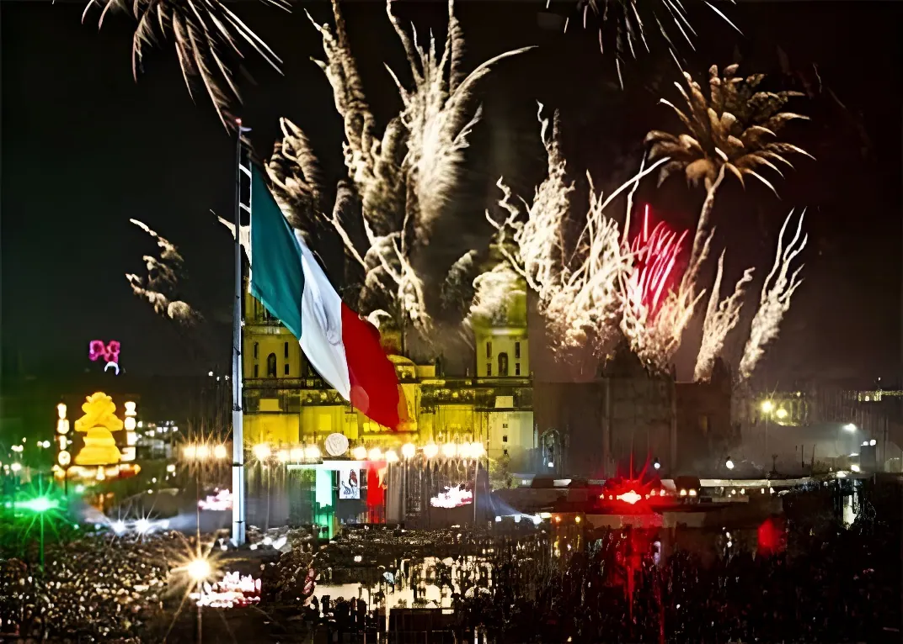

Dans la nuit du 15 au 16 septembre 2026, la présidente Claudia Sheinbaum a prononcé depuis le balcon central du Palais national son deuxième « Grito » présidentiel, devant plus de 300 000 personnes réunies sur le Zócalo de Mexico. Cette cérémonie commémore l'appel aux armes lancé en 1810 par le curé Miguel Hidalgo dans le village de Dolores, point de départ de la guerre d'indépendance. Le lendemain matin, le traditionnel défilé civico-militaire a mobilisé plus de 15 000 membres des forces armées. Cette édition 2026 s'est déroulée dans un contexte particulier : le retour des festivités publiques à Culiacán après deux années d'annulation liées à la violence des cartels, et des tensions diplomatiques avec l'administration Trump sur fond de discours présidentiel insistant sur la souveraineté du pays.
Le rituel commémore la nuit du 15 au 16 septembre 1810, lorsque le curé Miguel Hidalgo, dans le village de Dolores (aujourd'hui Dolores Hidalgo, dans l'État de Guanajuato), lance un appel à l'insurrection contre le pouvoir colonial espagnol. C'est en réalité le sonneur de cloches José Galván qui fit résonner la cloche de la paroisse pour rassembler la population, tandis qu'Hidalgo prononçait l'arengue appelant à la révolte. Cet épisode, connu comme le « Grito de Dolores », est considéré comme le point de départ de la guerre d'indépendance mexicaine, qui s'achèvera onze ans plus tard, en 1821.
La commémoration annuelle du 16 septembre est réclamée dès 1813 par le général Morelos auprès du Congrès de Chilpancingo, puis instituée comme fête nationale à partir de 1825 sous la présidence de Guadalupe Victoria. C'est cependant en 1896 que le président Porfirio Díaz fait transférer la cloche historique jusqu'au Palais national de Mexico et institutionnalise la mise en scène nocturne encore en vigueur aujourd'hui. Contrairement à une croyance répandue, ce choix de la soirée du 15 ne serait pas uniquement lié à la date de naissance de Díaz (15 septembre 1830) : des historiens rappellent que des veillées populaires la nuit précédant le 16 existaient déjà auparavant.
Miguel Hidalgo lance l'appel aux armes dans le village de Dolores ; la cloche de la paroisse est sonnée pour rassembler la population.
Morelos demande au Congrès de Chilpancingo de commémorer chaque année le 16 septembre ; la date devient fête nationale sous Guadalupe Victoria.
Porfirio Díaz fait transférer la cloche de Dolores au Palais national et instaure la cérémonie nocturne du 15 septembre depuis le balcon présidentiel.
Claudia Sheinbaum prononce son premier Grito en tant que présidente, quelques mois après son investiture.
Sheinbaum prononce son second Grito devant plus de 300 000 personnes ; le défilé civico-militaire se tient le lendemain matin.
Vers 23 heures le 15 septembre, Claudia Sheinbaum est sortie sur le balcon central du Palais national après avoir reçu le drapeau national des mains de cadets du Collège militaire. Elle a fait sonner la cloche de Dolores et lancé les vivas traditionnels aux héros et héroïnes de l'indépendance — Hidalgo, Josefa Ortiz Téllez Girón, Morelos, Leona Vicario, Vicente Guerrero, Gertrudis Bocanegra — en y ajoutant des mentions aux « sœurs et frères migrants » et aux peuples afro-mexicains, avant de conclure par « ¡Viva México libre, independiente y soberano! ». La soirée s'est poursuivie par un feu d'artifice et un concert gratuit du groupe Intocable.
Le lendemain matin, dès 10 heures, le traditionnel défilé civico-militaire est parti du Zócalo avec plus de 15 000 membres de l'armée, de la marine, de l'armée de l'air et de la Garde nationale, accompagnés d'un survol de 99 aéronefs. Le parcours a traversé le centre historique par les rues Cinco de Mayo et l'Eje Central, puis l'avenue Juárez et le Paseo de la Reforma, jusqu'au Campo Marte.
Cette édition s'est déroulée alors que les relations entre Mexico et Washington restent marquées par des frictions, entre enquêtes et annulations de visas visant des personnalités mexicaines de la part de l'administration Trump. Dans ce contexte, l'insistance de Claudia Sheinbaum sur un Mexique « libre, indépendant et souverain » a été largement lue comme un message adressé autant à l'opinion nationale qu'au voisin américain, tout en maintenant une coopération sécuritaire bilatérale.
| Étape | Date | Détail |
|---|---|---|
| Cri de Dolores | 15-16 sept. 1810 | Appel à l'insurrection par Hidalgo |
| Fête nationale | Dès 1825 | Institutionnalisée sous Guadalupe Victoria |
| Transfert de la cloche | 1896, par décret de Porfirio Díaz | |
| Défilé civico-militaire | 16 sept. 2026 | +15 000 militaires, Zócalo → Campo Marte |
Reconduit chaque année depuis plus de deux siècles, le Grito de Independencia continue de rassembler, du balcon du Palais national jusqu'à la plus petite place de village, des millions de Mexicains autour des mêmes mots et du même geste symbolique. Que ce soit face aux tensions avec Washington ou à la violence qui a longtemps empêché Culiacán de fêter dans la rue, cette cérémonie rappelle chaque 15 septembre qu'un même récit fondateur continue de tenir ensemble un pays vaste et fragmenté.
En la noche del 15 al 16 de septiembre de 2026, la presidenta Claudia Sheinbaum dio, desde el balcón central de Palacio Nacional, su segundo «Grito» presidencial, ante más de 300 mil personas reunidas en el Zócalo de la Ciudad de México. La ceremonia conmemora el llamado a las armas lanzado en 1810 por el cura Miguel Hidalgo en el pueblo de Dolores, punto de partida de la guerra de independencia. A la mañana siguiente, el tradicional Desfile Cívico Militar movilizó a más de 15 mil integrantes de las fuerzas armadas. Esta edición de 2026 se desarrolló en un contexto particular: el regreso de los festejos públicos en Culiacán tras dos años de cancelación por la violencia de los cárteles, y tensiones diplomáticas con la administración Trump, en un discurso presidencial centrado en la soberanía del país.
El ritual conmemora la noche del 15 al 16 de septiembre de 1810, cuando el cura Miguel Hidalgo, en el pueblo de Dolores (hoy Dolores Hidalgo, en el estado de Guanajuato), lanzó un llamado a la insurrección contra el poder colonial español. En realidad fue el campanero José Galván quien hizo sonar la campana de la parroquia para congregar a la población, mientras Hidalgo pronunciaba la arenga que llamaba a la rebelión. Este episodio, conocido como el «Grito de Dolores», es considerado el punto de partida de la guerra de independencia mexicana, que concluiría once años después, en 1821.
La conmemoración anual del 16 de septiembre fue solicitada desde 1813 por el general Morelos ante el Congreso de Chilpancingo, y se instituyó como fiesta nacional a partir de 1825 bajo la presidencia de Guadalupe Victoria. Sin embargo, fue en 1896 cuando el presidente Porfirio Díaz mandó trasladar la campana histórica hasta el Palacio Nacional de la Ciudad de México e institucionalizó la puesta en escena nocturna que sigue vigente hoy. A diferencia de una creencia extendida, este cambio a la noche del 15 no se debería únicamente a la fecha de nacimiento de Díaz (15 de septiembre de 1830): historiadores señalan que ya existían verbenas populares la víspera del 16 antes de su gobierno.
Miguel Hidalgo lanza el llamado a las armas en el pueblo de Dolores; se hace sonar la campana de la parroquia para congregar al pueblo.
Morelos pide al Congreso de Chilpancingo conmemorar cada año el 16 de septiembre; la fecha se convierte en fiesta nacional bajo Guadalupe Victoria.
Porfirio Díaz manda trasladar la campana de Dolores al Palacio Nacional e instaura la ceremonia nocturna del 15 de septiembre desde el balcón presidencial.
Claudia Sheinbaum da su primer Grito como presidenta, meses después de su investidura.
Sheinbaum da su segundo Grito ante más de 300 mil personas; el Desfile Cívico Militar se realiza a la mañana siguiente.
Hacia las 23:00 horas del 15 de septiembre, Claudia Sheinbaum salió al balcón central de Palacio Nacional tras recibir la Bandera Nacional de manos de cadetes del Colegio Militar. Hizo sonar la campana de Dolores y lanzó las tradicionales arengas a los héroes y heroínas de la independencia —Hidalgo, Josefa Ortiz Téllez Girón, Morelos, Leona Vicario, Vicente Guerrero, Gertrudis Bocanegra—, añadiendo menciones a «las hermanas y hermanos migrantes» y a los pueblos afromexicanos, antes de concluir con «¡Viva México libre, independiente y soberano!». La noche continuó con un espectáculo de fuegos artificiales y un concierto gratuito del grupo Intocable.
A la mañana siguiente, desde las 10:00 horas, el tradicional Desfile Cívico Militar salió del Zócalo con más de 15 mil integrantes del Ejército, la Marina, la Fuerza Aérea y la Guardia Nacional, junto con un sobrevuelo de 99 aeronaves. El recorrido cruzó el Centro Histórico por las calles 5 de Mayo y Eje Central, después la avenida Juárez y el Paseo de la Reforma, hasta llegar a Campo Marte.
Esta edición se desarrolló mientras las relaciones entre México y Washington siguen marcadas por fricciones, entre investigaciones y cancelaciones de visas contra figuras mexicanas por parte de la administración Trump. En este contexto, la insistencia de Claudia Sheinbaum en un México «libre, independiente y soberano» fue leída ampliamente como un mensaje dirigido tanto a la opinión nacional como al vecino estadounidense, sin dejar de mantener la cooperación bilateral en materia de seguridad.
| Etapa | Fecha | Detalle |
|---|---|---|
| Grito de Dolores | 15-16 sept. 1810 | Llamado a la insurrección por Hidalgo |
| Fiesta nacional | Desde 1825 | Institucionalizada bajo Guadalupe Victoria |
| Traslado de la campana | 1896, por decreto de Porfirio Díaz | |
| Desfile Cívico Militar | 16 sept. 2026 | +15 mil militares, Zócalo → Campo Marte |
Repetido cada año desde hace más de dos siglos, el Grito de Independencia sigue reuniendo, desde el balcón de Palacio Nacional hasta la plaza más pequeña de un pueblo, a millones de mexicanos alrededor de las mismas palabras y del mismo gesto simbólico. Ya sea frente a las tensiones con Washington o a la violencia que durante años impidió a Culiacán festejar en la calle, esta ceremonia recuerda cada 15 de septiembre que un mismo relato fundacional sigue manteniendo unido a un país extenso y fragmentado.